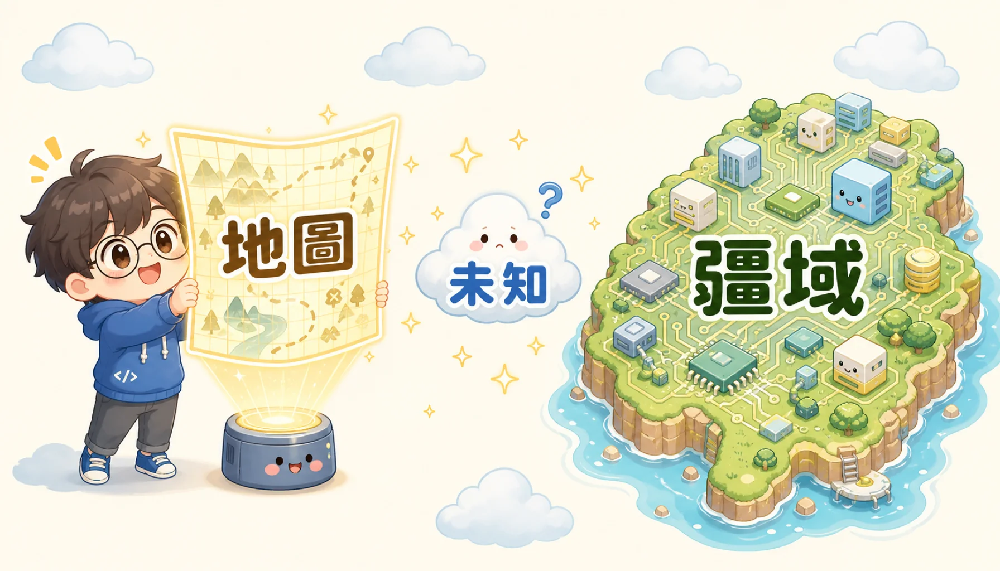
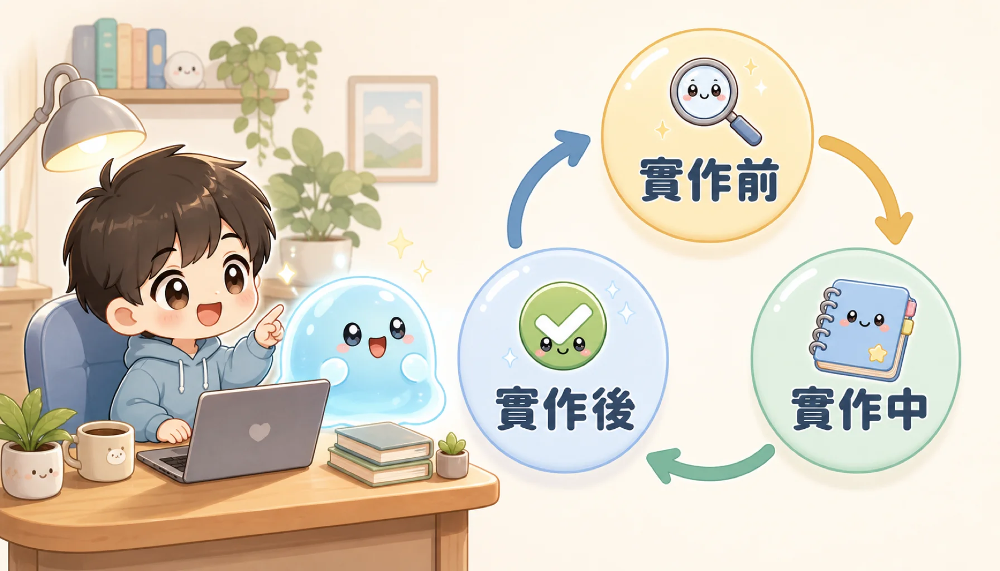

你一定遇過這種事：你跟 AI 說清楚要做什麼，AI 也很快生出一大堆程式碼。你很有信心地執行，畫面卻跳出滿滿的紅字錯誤。你仔細一看，程式碼的文法完全沒錯，問題出在別的地方：AI 用了一個專案裡根本不存在的功能，或是誤解了你原本程式的架構。你可能會想：「這 AI 是不是在亂猜？」其實更準確地說：AI 猜對了你「有講出來」的部分，猜錯了你「以為不用講」的部分。這不是 AI 笨，而是你們兩個之間，有一段連你自己都沒發現的溝通落差。
「地圖不是疆域。」你寫給 AI 的提示詞，就像一張地圖——那是你腦中對這個專案的想像。但專案真正的程式碼、資料庫、還有各種例外狀況，才是「疆域」，也就是真實世界的樣子。地圖畫得再仔細，也可能跟真正的地形不一樣。
地圖跟疆域中間的落差，就叫做「未知」。現在 AI 寫程式碼的速度快到不可思議，所以真正決定一個專案做得好不好的，已經不是「AI 會不會寫程式」，而是「人類能不能把疆域裡藏著的未知，講清楚給 AI 聽」。


舊方法為什麼行不通：寫文件真的能解決問題嗎？
比較有經驗的工程師，可能會想到過去的做法：在動手寫程式之前，先花很長時間，把需求跟系統設計的每個細節，都寫成一份很厚的文件，想辦法先把所有問題都想清楚。這麼做的道理很簡單：以前寫程式碼很花時間、很花力氣，所以先想清楚，比先寫出來再說更划算。
但這個道理，現在被 AI 打破了。現在只要幾分鐘，AI 就能幫你做出一個可以試用的原型，幾乎不用花什麼成本。這樣一來，「先寫一份很厚的文件」反而變成比較貴的做法——因為那份文件一樣會有寫漏的地方，而漏掉的地方，要等到真的寫程式碼時才會被發現。說白了：寫文件從來沒有真的解決「未知」的問題，它只是把犯錯的時間往後延，讓你誤以為「我已經都想清楚了」。原型比文件誠實，因為原型會直接讓你看到，你以為理所當然、但其實從沒講清楚的假設，到底對不對。
老實說，「地圖與疆域」這個說法，其實不是全新的概念，跟很多管理學裡「已知／未知」的分類方式很像。它真正的價值，不是這個分類本身，而是把「發現問題、然後修正」這件事，壓縮到只要幾分鐘，讓釐清問題跟寫程式碼一樣便宜。

拆開來看：四種未知與三個階段到底在解決什麼
跟 AI 一起工作時，你腦中或專案裡的所有資訊，其實可以分成四種。這樣分類，可以幫你更有系統地找出「還沒講清楚」的地方：

這四種分類的重點，不是分得多精細，而是每一種都要用不同的方法對付：「已知未知」只要主動問清楚就好，成本最低；「未知已知」最適合先做一個簡單的原型讓 AI 做做看、你再挑錯——因為你可能講不出「對」的樣子，但一看就知道「錯」在哪裡；「未知未知」最麻煩，因為你連要問什麼都不知道，只能反過來請 AI 幫你檢查，看看有沒有你完全沒想到的盲點。厲害的工程師，通常很擅長用 AI 把這四種未知一個一個變成已知——不是把 AI 當成打字機，而是當成一起把問題想清楚的夥伴。
把這套分類真的用在日常工作上，可以簡化成三個階段，而且每個階段都能在幾分鐘內完成：動手寫之前，先用便宜的方法把「已知未知」跟「未知已知」問清楚；動手寫的過程中，假設一定會冒出「未知未知」，所以請 AI 隨手記下來，而不是自己悶著頭決定；寫完之後，把「我到底懂不懂這段程式碼」這件事，變成一個可以答錯的小考，而不是憑感覺。
-
1
動手寫之前：先找出自己的盲點
如果你對這部分的程式庫不熟，可以先請 AI 幫你做一次「盲點檢查」，或是先做一個只有假資料的簡單畫面，讓你在還沒動到真正的程式碼之前，先確認排版跟操作方式順不順手。
-
2
動手寫的過程中：留下紀錄
AI 在寫程式碼時，難免會遇到當初沒想到的特殊情況。這時候讓 AI 寫一份筆記，記下它做了什麼取捨、跟原本計畫有哪裡不一樣。這樣它才不會自己偷偷改變方向，你事後也才看得懂發生了什麼事。
-
3
寫完之後：確認自己真的看懂了
AI 一次可能會改動很多程式碼，只看改了哪些地方（Git Diff），很難確定你真的看懂邏輯。合併之前，請 AI 出幾題考考你，確保你真的理解這次的改動，再進行合併。

這個方法有一個大家沒說出來的漏洞
最需要小心的地方，是「請 AI 自己記錄哪裡跟計畫不一樣」這一步。這句話聽起來很合理，但它藏著一個矛盾：要 AI 記下自己「哪裡偏離了計畫」，前提是 AI 要先「知道自己偏離了」。但「未知未知」的意思，就是連 AI 自己都不知道自己不知道。所以 AI 也可能悄悄地偏離了方向，卻完全沒發現，自然也不會寫進筆記裡，或是寫得很輕描淡寫。這不是說這個方法沒用，而是它有一個先天的限制：這份筆記，只能抓到「AI 自己有意識到、而且願意老實寫下來」的那一部分。真正藏得很深的問題，筆記幫不上忙——那些終究要靠人自己去讀程式碼、自己跑一次看看結果，才抓得到。光靠一份筆記，沒辦法代替真的動手檢查。
小考這一步，也值得多想一下。小考測的是「你懂不懂這段程式碼在做什麼」，這很重要，但它測的是「理解」，不是「正確」。你可能每一題都答對，但那段程式碼在某個沒被問到的特殊狀況下，還是可能是錯的。小考證明的是「你跟得上 AI 的邏輯」，不是「AI 的邏輯本身是對的」。這是兩件不一樣的事：一個是「我們有沒有溝通清楚」，一個是「這個東西到底對不對」。只做小考，很容易讓人誤以為「我已經驗證過了」，但其實只驗證了一半。
真正該記住的一件事：不是流程圖，而是力氣要花在哪裡
在 AI 寫程式碼快到不像話的年代，一個工程師真正的價值，已經不是「打字速度」，而是「能不能找出問題、把需求講清楚」。更值得投資的，不是把提示詞寫得多完美，而是看懂一件正在發生的事：以前「寫程式碼」很貴、「想清楚」很便宜，所以要先寫文件；現在「寫程式碼」幾乎不用花錢、「確認到底對不對」變成最貴的一步。所以「找出未知」和「確認正確」，要分開處理，各自花該花的力氣。下次開始一個新任務前，與其想「我該怎麼下提示詞」，不如先問自己：「這次的未知，哪些用一句話問清楚就好，哪些一定要實際跑過、親眼看到結果才能確定？」把這條線分清楚，比背再多的口訣都有用。
附錄：可直接複製的協作 Prompt
以下整理了文章中提及的黃金 Prompt 範本，你可以直接複製並應用於自己與 AI 代理的日常對話中：